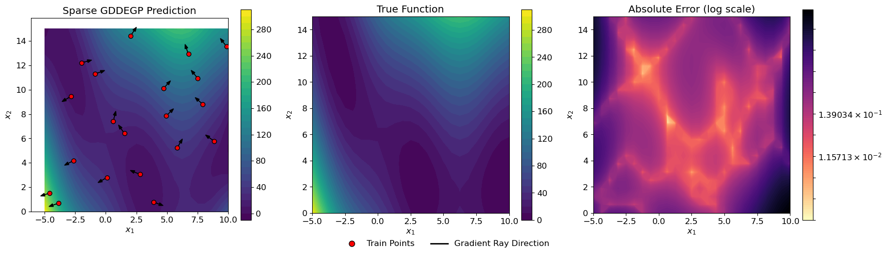

Sparse Generalized Directional Derivative-Enhanced Gaussian Process (Sparse GDDEGP)#
Overview#
The Sparse Generalized Directional Derivative-Enhanced Gaussian Process (Sparse GDDEGP) extends the GDDEGP framework by using a sparse Cholesky (Vecchia) approximation for the kernel matrix inverse during hyperparameter optimization. This enables efficient training on larger datasets while retaining the ability to use pointwise directional derivatives where different directions can be specified at each training point.
Key features:
Uses sparse Cholesky decomposition based on the Vecchia approximation for scalable training
Applies maximin distance (MMD) ordering of training points for optimal sparsity patterns
Prediction uses exact dense Cholesky for accuracy
Controlled by the
rhoparameter (neighborhood size) anduse_supernodes(batched computation)Drop-in replacement for the dense GDDEGP with only two additional parameters
Retains full pointwise directional flexibility – different directions at each training point
Key Difference from Sparse DDEGP:
Sparse DDEGP: Uses the same set of directional rays at all training points (global directions)
Sparse GDDEGP: Allows different directional rays at each training point (generalized/pointwise directions)
—
Example 1: Generalized Directional GP with Gradient-Aligned Rays on the Branin Function#
Overview#
This example demonstrates the Sparse GDDEGP applied to the 2D Branin function with gradient-aligned rays at each training point. Each point has its own unique derivative direction aligned with the local gradient.
—
Step 1: Import required packages#
import numpy as np
import sympy as sp
from jetgp.full_gddegp_sparse.gddegp import gddegp
from scipy.stats import qmc
from matplotlib import pyplot as plt
from matplotlib.colors import LogNorm
from matplotlib.lines import Line2D
import jetgp.utils as utils
plt.rcParams.update({'font.size': 12})
Explanation:
We import the sparse GDDEGP from full_gddegp_sparse instead of full_gddegp. All other imports are identical.
—
Step 2: Set configuration parameters#
n_order = 1
n_bases = 2
num_training_pts = 20
domain_bounds = ((-5.0, 10.0), (0.0, 15.0))
test_grid_resolution = 25
normalize_data = True
kernel = "SE"
kernel_type = "anisotropic"
random_seed = 1
np.random.seed(random_seed)
# Sparse Cholesky parameters
rho = 1.0
use_supernodes = True
print("Configuration complete!")
print(f"Number of training points: {num_training_pts}")
print(f"Sparse Cholesky: rho={rho}, use_supernodes={use_supernodes}")
Configuration complete!
Number of training points: 20
Sparse Cholesky: rho=1.0, use_supernodes=True
Explanation: Configuration is identical to the dense GDDEGP, with two additional sparse Cholesky parameters.
—
Step 3: Define the Branin function and its gradient#
# Define symbolic Branin function
x_sym, y_sym = sp.symbols('x y')
a, b, c, r, s, t = 1.0, 5.1/(4*sp.pi**2), 5.0/sp.pi, 6.0, 10.0, 1.0/(8*sp.pi)
f_sym = a * (y_sym - b*x_sym**2 + c*x_sym - r)**2 + s*(1 - t)*sp.cos(x_sym) + s
# Compute symbolic gradients
grad_x_sym = sp.diff(f_sym, x_sym)
grad_y_sym = sp.diff(f_sym, y_sym)
# Convert to NumPy functions
true_function_np = sp.lambdify([x_sym, y_sym], f_sym, 'numpy')
grad_x_func = sp.lambdify([x_sym, y_sym], grad_x_sym, 'numpy')
grad_y_func = sp.lambdify([x_sym, y_sym], grad_y_sym, 'numpy')
def true_function(X, alg=np):
"""2D Branin function."""
return true_function_np(X[:, 0], X[:, 1])
def true_gradient(x, y):
"""Analytical gradient of the Branin function."""
gx = grad_x_func(x, y)
gy = grad_y_func(x, y)
return gx, gy
print("Branin function and analytical gradients defined!")
Branin function and analytical gradients defined!
Explanation: The Branin function and its symbolic gradients are defined identically to the dense GDDEGP example.
—
Step 4: Define arrow clipping utility#
def clipped_arrow(ax, origin, direction, length, bounds, color="black"):
"""Draw an arrow clipped to plot bounds."""
x0, y0 = origin
dx, dy = direction * length
xlim, ylim = bounds
tx = np.inf if dx == 0 else (
xlim[1] - x0)/dx if dx > 0 else (xlim[0] - x0)/dx
ty = np.inf if dy == 0 else (
ylim[1] - y0)/dy if dy > 0 else (ylim[0] - y0)/dy
t_clip = min(1.0, tx, ty)
ax.arrow(x0, y0, dx*t_clip, dy*t_clip, head_width=0.25,
head_length=0.35, fc=color, ec=color)
print("Arrow clipping utility defined!")
Arrow clipping utility defined!
Explanation: This utility function draws arrows representing gradient directions while ensuring they stay within plot boundaries.
—
Step 5: Generate training data with gradient-aligned derivatives#
# 1. Generate points using Latin Hypercube
sampler = qmc.LatinHypercube(d=n_bases, seed=random_seed)
unit_samples = sampler.random(n=num_training_pts)
X_train = qmc.scale(unit_samples,
[b[0] for b in domain_bounds],
[b[1] for b in domain_bounds])
# 2. Compute gradient-aligned rays at each training point
rays_list = []
for i, (x, y) in enumerate(X_train):
gx, gy = true_gradient(x, y)
magnitude = np.sqrt(gx**2 + gy**2)
ray = np.array([[gx/magnitude], [gy/magnitude]])
rays_list.append(ray)
# 3. Compute function values at training points
y_func = true_function(X_train).reshape(-1, 1)
# 4. Compute directional derivatives using the chain rule
directional_derivs = []
for i, (x, y) in enumerate(X_train):
gx, gy = true_gradient(x, y)
ray_direction = rays_list[i].flatten()
dir_deriv = gx * ray_direction[0] + gy * ray_direction[1]
directional_derivs.append(dir_deriv)
directional_derivs_array = np.array(directional_derivs).reshape(-1, 1)
# 5. Package training data
y_train_list = [y_func, directional_derivs_array]
der_indices = [[[[1, 1]]]]
print(f"Training data generated!")
print(f"X_train shape: {X_train.shape}")
print(f"Function values shape: {y_func.shape}")
print(f"Directional derivatives shape: {directional_derivs_array.shape}")
print(f"Number of unique ray directions: {len(rays_list)}")
Training data generated!
X_train shape: (20, 2)
Function values shape: (20, 1)
Directional derivatives shape: (20, 1)
Number of unique ray directions: 20
Explanation: Training data generation is identical to the dense GDDEGP. Each training point has its own gradient-aligned ray direction, which is the key feature of the generalized approach.
—
Step 6: Initialize and train the Sparse GDDEGP model#
# Convert rays_list to array format
rays_array = np.hstack(rays_list) # Shape: (2, num_training_pts)
derivative_locations = []
for i in range(len(der_indices)):
for j in range(len(der_indices[i])):
derivative_locations.append([i for i in range(len(X_train))])
print(f"Rays array shape: {rays_array.shape}")
print("Initializing Sparse GDDEGP model...")
# Initialize Sparse GDDEGP model
gp_model = gddegp(
X_train,
y_train_list,
n_order=n_order,
rays_list=[rays_array],
der_indices=der_indices,
derivative_locations=derivative_locations,
normalize=normalize_data,
kernel=kernel,
kernel_type=kernel_type,
rho=rho,
use_supernodes=use_supernodes
)
print("Sparse GDDEGP model initialized!")
print("Optimizing hyperparameters...")
# Optimize hyperparameters
params = gp_model.optimize_hyperparameters(
optimizer='pso',
pop_size=200,
n_generations=15,
local_opt_every=15,
debug=False
)
print("Optimization complete!")
print(f"Optimized parameters: {params}")
Rays array shape: (2, 20)
Initializing Sparse GDDEGP model...
Sparse GDDEGP model initialized!
Optimizing hyperparameters...
Stopping: maximum iterations reached --> 15
Optimization complete!
Optimized parameters: [ -0.21484687 -0.63504218 0.76027964 -15.24377463]
Explanation:
The sparse GDDEGP model is initialized identically to the dense version, with the addition of rho and use_supernodes. The sparse Cholesky approximation is used internally during hyperparameter optimization.
—
Step 7: Evaluate model on a test grid#
# Create test grid
gx = np.linspace(domain_bounds[0][0], domain_bounds[0][1], test_grid_resolution)
gy = np.linspace(domain_bounds[1][0], domain_bounds[1][1], test_grid_resolution)
X1_grid, X2_grid = np.meshgrid(gx, gy)
X_test = np.column_stack([X1_grid.ravel(), X2_grid.ravel()])
N_test = X_test.shape[0]
print(f"Test grid: {test_grid_resolution}x{test_grid_resolution} = {N_test} points")
print("Making predictions...")
y_pred_full = gp_model.predict(
X_test, params, calc_cov=False, return_deriv=False)
y_pred = y_pred_full[0,:] # Function values only
# Compute ground truth and error
y_true = true_function(X_test, alg=np)
nrmse_val = utils.nrmse(y_true.flatten(), y_pred.flatten())
print(f"\nModel Performance:")
print(f" NRMSE: {nrmse_val:.6f}")
abs_error = np.abs(y_true.flatten() - y_pred.flatten())
print(f" Max absolute error: {abs_error.max():.6f}")
print(f" Mean absolute error: {abs_error.mean():.6f}")
Test grid: 25x25 = 625 points
Making predictions...
Model Performance:
NRMSE: 0.018582
Max absolute error: 61.443817
Mean absolute error: 1.889726
Explanation: Predictions use exact dense Cholesky for full accuracy. The NRMSE quantifies prediction accuracy across the test domain.
—
Step 8: Verify interpolation of training data#
# Predict at training points with derivatives
rays_train = np.hstack(rays_list)
y_pred_train_full = gp_model.predict(
X_train, params, rays_predict=[rays_train], calc_cov=False, return_deriv=True
)
# Verify function values
y_pred_train_func = y_pred_train_full[0,:]
max_func_error = np.max(np.abs(y_pred_train_func - y_func.flatten()))
print(f"Maximum absolute function value error: {max_func_error:.2e}")
# Verify directional derivatives
y_pred_train_derivs = y_pred_train_full[1,:]
analytic_derivs = y_train_list[1]
max_deriv_error = np.max(np.abs(y_pred_train_derivs - analytic_derivs.flatten()))
print(f"Maximum absolute derivative error: {max_deriv_error:.2e}")
print("\nInterpolation errors should be near machine precision (< 1e-6)")
Maximum absolute function value error: 9.50e-06
Maximum absolute derivative error: 4.39e-07
Interpolation errors should be near machine precision (< 1e-6)
Explanation: Since predictions use exact dense Cholesky, both function values and directional derivatives should interpolate to machine precision at training points.
—
Step 9: Visualize results with gradient-aligned rays#
# Prepare visualization data
fig, axs = plt.subplots(1, 3, figsize=(18, 5))
# GDDEGP Prediction
cf1 = axs[0].contourf(X1_grid, X2_grid, y_pred.reshape(X1_grid.shape),
levels=30, cmap='viridis')
axs[0].scatter(X_train[:, 0], X_train[:, 1], c='red', s=40,
edgecolors='k', zorder=5)
xlim, ylim = (domain_bounds[0], domain_bounds[1])
for pt, ray in zip(X_train, rays_list):
clipped_arrow(axs[0], pt, ray.flatten(), length=0.5,
bounds=(xlim, ylim), color="black")
axs[0].set_title("Sparse GDDEGP Prediction")
fig.colorbar(cf1, ax=axs[0])
# True function
cf2 = axs[1].contourf(X1_grid, X2_grid, y_true.reshape(X1_grid.shape),
levels=30, cmap='viridis')
axs[1].set_title("True Function")
fig.colorbar(cf2, ax=axs[1])
# Absolute Error (log scale)
abs_error_grid = np.abs(y_pred.flatten() - y_true.flatten()).reshape(X1_grid.shape)
abs_error_clipped = np.clip(abs_error_grid, 1e-6, None)
log_levels = np.logspace(np.log10(abs_error_clipped.min()),
np.log10(abs_error_clipped.max()), num=100)
cf3 = axs[2].contourf(X1_grid, X2_grid, abs_error_clipped, levels=log_levels,
norm=LogNorm(), cmap="magma_r")
fig.colorbar(cf3, ax=axs[2])
axs[2].set_title("Absolute Error (log scale)")
for ax in axs:
ax.set_xlabel("$x_1$")
ax.set_ylabel("$x_2$")
ax.set_aspect("equal")
custom_lines = [
Line2D([0], [0], marker='o', color='w', markerfacecolor='red',
markeredgecolor='k', markersize=8, label='Train Points'),
Line2D([0], [0], color='black', lw=2, label='Gradient Ray Direction'),
]
fig.legend(handles=custom_lines, loc='lower center', ncol=2,
frameon=False, fontsize=12, bbox_to_anchor=(0.5, -0.02))
plt.tight_layout(rect=[0, 0.05, 1, 1])
plt.show()
print(f"\nFinal NRMSE: {nrmse_val:.6f}")

Final NRMSE: 0.018582
Explanation: The three-panel visualization shows the sparse GDDEGP prediction, true function, and absolute error. The black arrows at each training point show the gradient-aligned derivative directions, which vary from point to point.
—
Summary#
This example demonstrates the Sparse GDDEGP as a drop-in replacement for the dense GDDEGP:
Same API: Only
rhoanduse_supernodesare added to the constructorSame predictions: Prediction uses exact dense Cholesky for full accuracy
Faster training: Sparse Cholesky approximation accelerates hyperparameter optimization
Scalable: The speedup grows with dataset size, making large-scale GDDEGP practical
Full flexibility: Retains pointwise directional control – different rays at each training point
Sparse Cholesky Parameters:
Comparison with Other Sparse Approaches:
Method |
Derivative Directions |
Sparse Training |
|---|---|---|
Sparse DEGP |
Coordinate-aligned (fixed) |
Vecchia approximation |
Sparse DDEGP |
User-specified (global/same at all points) |
Vecchia approximation |
Sparse GDDEGP |
Pointwise (can differ at each training point) |
Vecchia approximation |